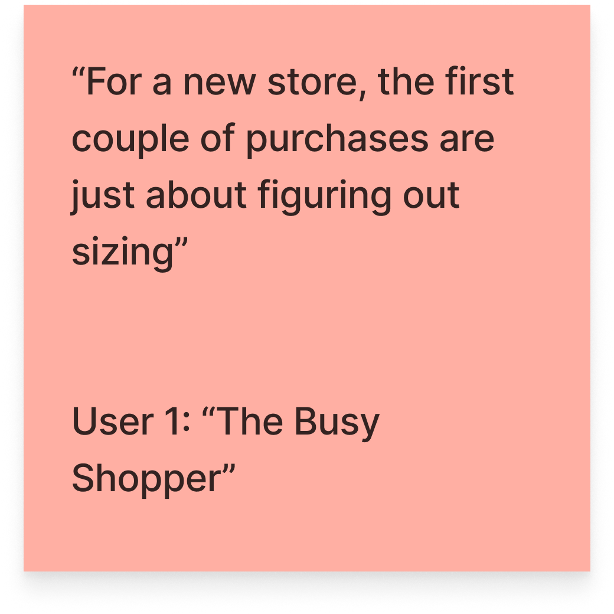
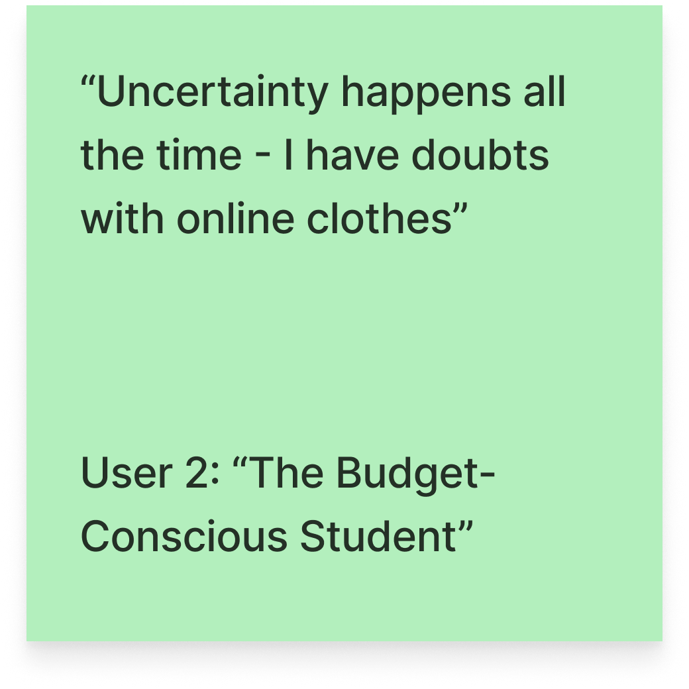
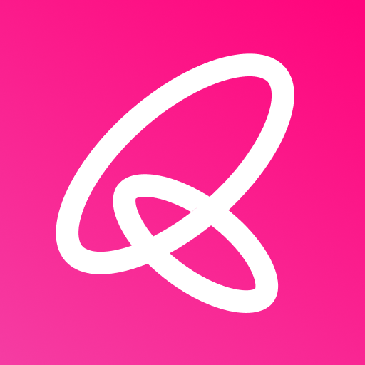
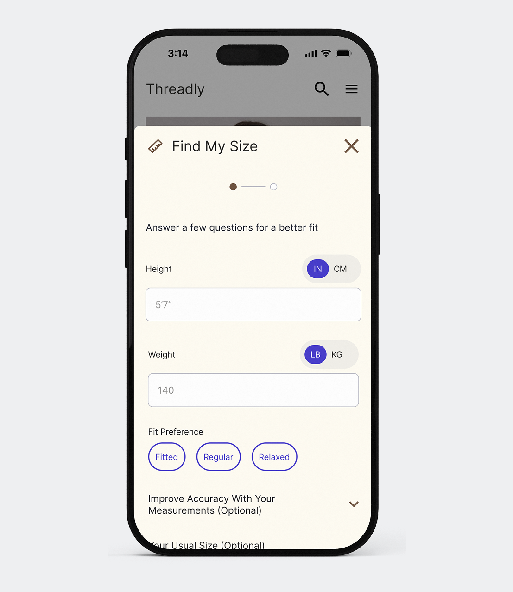
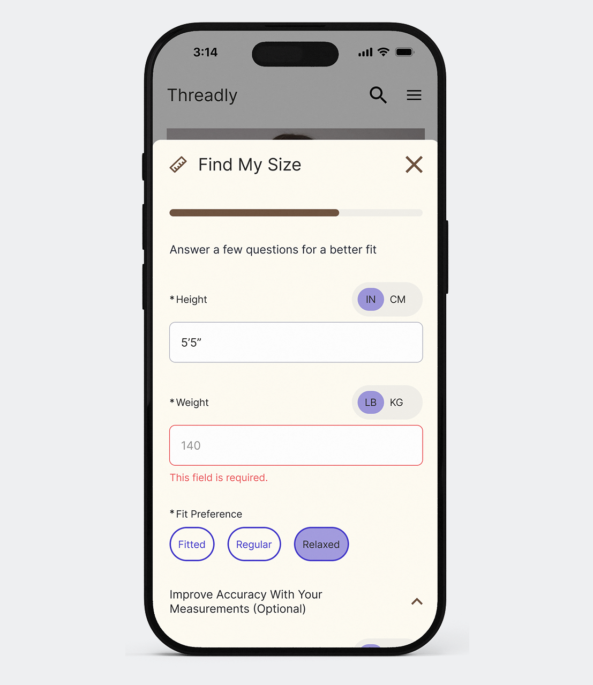
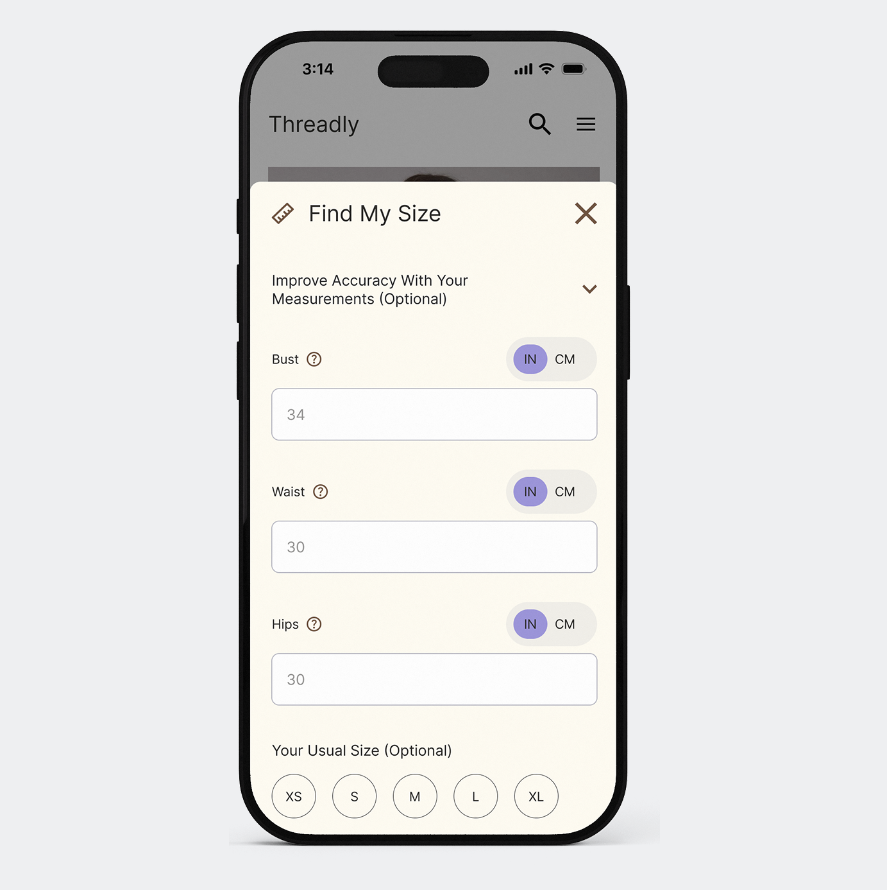
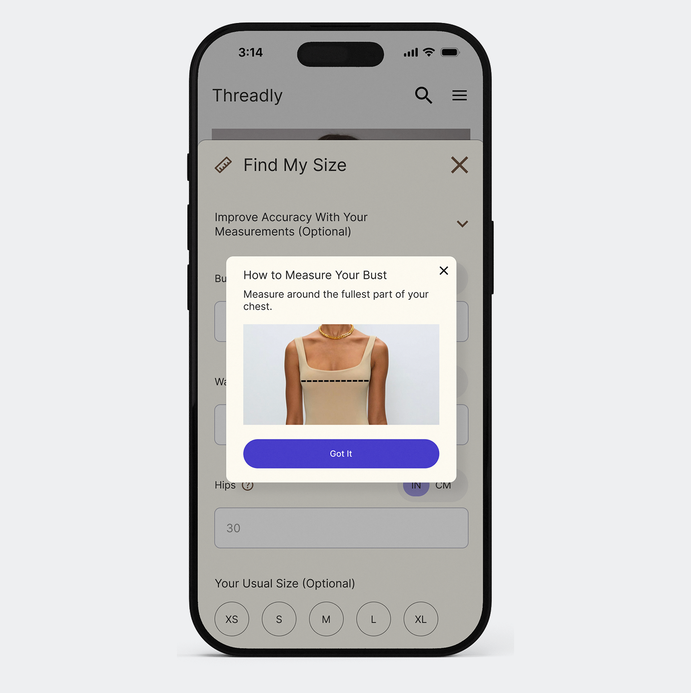
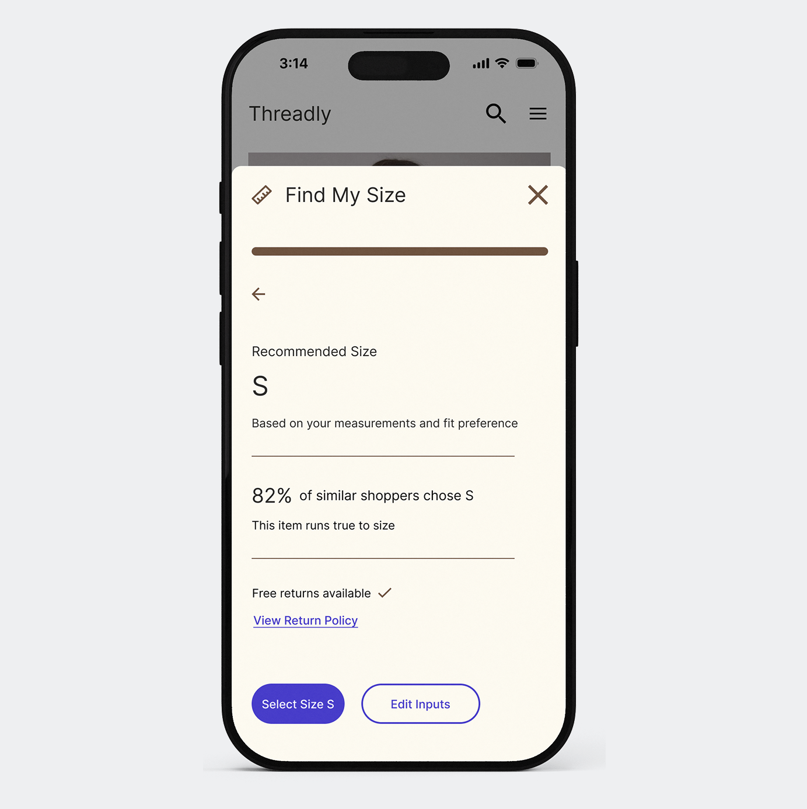
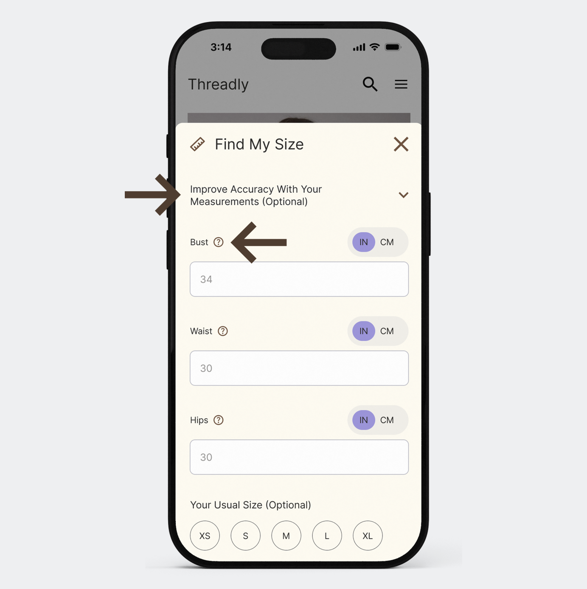
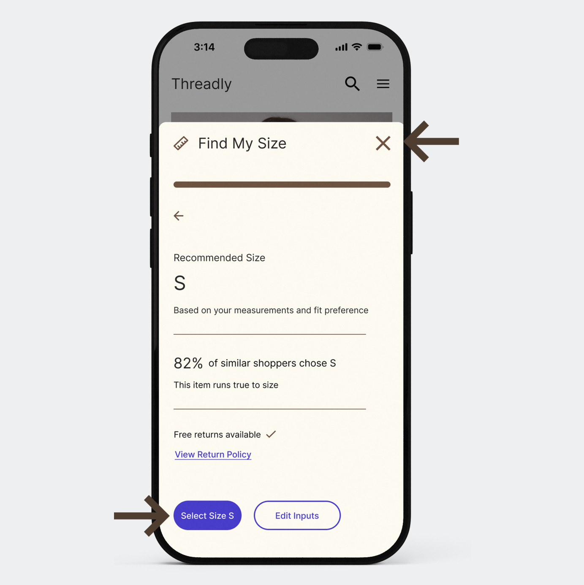

End-to-end UX · GIT 340 · 2026

Find My Size
Online shoppers aren't short on sizing tools, they're short on reasons to believe them. A recommendation means nothing if it doesn't explain itself. And the stakes aren't just user frustration: sizing-driven returns are one of online retail's most expensive problems, and every return starts as a moment of doubt at checkout. Online-first clothing shoppers need clear and trustworthy sizing guidance before purchasing so they can reduce uncertainty and avoid unnecessary returns.
Both users I interviewed felt the most stress before purchasing, not after the package arrived. That single finding shaped the entire project. Size charts felt too generic. Fit tools felt unreliable. Buying from a new brand meant the first few purchases were basically trial runs.


I synthesized both interviews into a composite shopper: a woman in her 20s–30s who shops online monthly but never feels certain something will fit until she tries it on. She loves the convenience and dreads the guesswork. That tension, not a demographic profile, is what the design had to resolve.

Mapping Sophie's end-to-end journey made the problem precise. Emotion stays relatively neutral through browsing, then drops sharply at Compare & Decide, the exact moment she's weighing whether the sizing risk is worth it. Notably, once she commits to a purchase, mood recovers immediately: the wait feels exciting, not anxious. The problem isn't the order, it's the decision before it. That dip became the design target.

I analyzed three existing sizing tools, PacSun's True Fit integration, Aritzia's size chart, and Fytted, then conducted a heuristic evaluation of Aritzia's full shopping flow.

Each had real strengths. But the gap was consistent across all three:
Help online shoppers trust a size recommendation enough to buy with confidence without asking them to leave the product page to get one?
The dip at Compare & Decide was the brief. Every design decision that followed was an answer to the same question: what does a shopper need at that exact moment to feel confident enough to commit?
Task FlowPaper sketches let me work out the core interaction logic: where the module lived, what the form needed to ask, and how the recommendation screen should be structured. What they couldn't tell me was whether the visual hierarchy was working. That's what the first hi-fi round had to solve.

I designed Find My Size as a module that lives directly above the size selector on the product page. The core constraint was deliberate: no app download, no account creation, no body scan. Every existing tool added friction before a shopper could access anything. Find My Size required none of that as users could try it without committing to it first.
I considered building a standalone app similar to Fytted, but a key weakness kept surfacing: separating the tool from the product and checkout flow breaks the moment that matters most. Keeping it embedded wasn't just simpler, it was the right answer to the HMW.

Progressive disclosure on the form
Height, weight, and fit preference are asked upfront, which is the minimum for a useful recommendation. Body measurements live in a collapsible section and usual size is an added field, keeping the experience light while giving detail-oriented users a path to more accuracy.

Progress bar over step counter
An earlier iteration used a step counter. I replaced it with a progress bar: it communicates progress made rather than work remaining, which is the gentler frame for a form you want people to finish.

Visual hierarchy refinement
Toggle buttons for IN/CM, LB/KG, and fit preference were pulled to a lighter purple in the second iteration. Everything competed equally before so dialing them back made "Get Size Recommendation" the clear visual anchor.

Inline measurement guides
A heuristic evaluation of Aritzia revealed that users benefited from visual measurement guides inline. I adopted the same idea so users who didn't know their bust or waist measurement had a reference right there, without leaving the flow.

The recommendation screen shows its work
The result screen shows the suggested size, how it was determined, what percentage of similar shoppers chose it, whether the item runs true to size, and a free returns note with a link to the return policy. Most tools give you an answer. This one explains the reasoning behind it.
I tested the Figma Make prototype in person with two participants who shopped online monthly on mobile and had returned items due to sizing before, different from the research interviewees.
This was the question the test was really asking. The scores say yes: both users entered the study only somewhat confident about sizing at new stores, and after receiving a recommendation, rated their confidence 4/5 and 5/5.
But they built that trust differently. User 2 spent 42 seconds on the recommendation screen and said her confidence came primarily from the measurements she had entered, not the social proof. The recommendation felt trustworthy because it was visibly built on her own inputs. User 1 dismissed the same screen in 5 seconds, likely too fast to absorb the social proof at all.
Transparency worked, just not the way I designed it to. The trust-building element wasn't the social stat. It was input visibility. The two users also revealed two trust modes: the verifier, who invests time for accuracy, and the skimmer, who gives the screen about five seconds. The Select Size microcopy fix is really a trust-delivery problem for the skimmer.
One score complicates the win: User 2, the most confident user, rated herself only neutral (3/5) on using a feature like this again. Thoroughness bought confidence but at a cost she wasn't sure she'd pay every time, which validates the project's core constraint: the form has to stay light.


Recommendations for Next Iteration
The friction points are the finding. Both users completed the full flow without guidance. But the friction points that surfaced are the most valuable part of the test. Each one points to a specific, distinct problem: an affordance gap, a visual hierarchy failure, and an IA issue that lives upstream of the feature itself.
A note on scale. This project was built on two interviews and two usability sessions. That's enough to see how trust forms, not enough to prove it generalizes. A larger study would test whether input visibility really matters more than social proof, whether people would use the tool repeatedly, and whether it actually reduces returns. The next step isn't more design. It's more research.
I designed a help icon assuming users would notice it. One user asked aloud how to measure her bust instead. That single moment taught me more about visual hierarchy than two rounds of iteration did.
The details you're most confident about are the ones worth testing first.